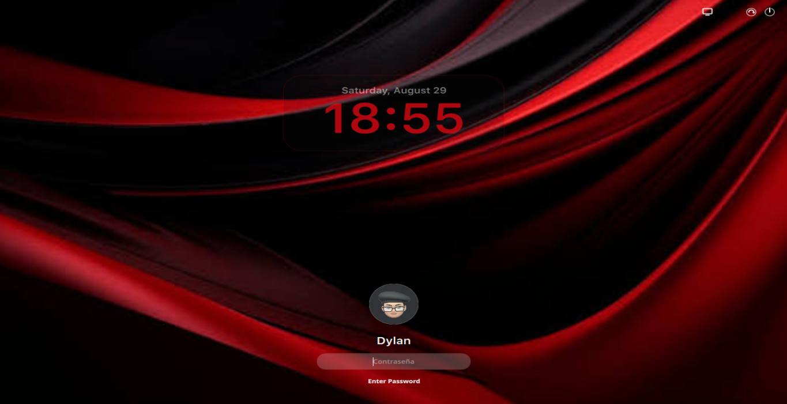

Linux, rediseñado
para destacar.
DylanOS combina potencia, simplicidad y un diseño cuidadosamente construido para ofrecer una experiencia Linux moderna.

Basado en Linux
Sistema abierto y flexible
Diseño moderno
Interfaz pensada para la productividad
Alto rendimiento
Optimizado para el uso diario
100% personalizable
Haz que el sistema sea tuyo
Todo lo que necesitas. Nada que no necesites.
Diseño moderno
Una interfaz visual limpia, elegante y cuidadosamente diseñada.
Productividad
Herramientas pensadas para trabajar, crear y organizar.
Rendimiento
Una experiencia optimizada para aprovechar mejor tu hardware.
Personalización
Configura DylanOS para adaptarlo completamente a tu estilo.
Ecosistema
Aplicaciones y herramientas organizadas en una experiencia coherente.
Código abierto
Construido sobre tecnologías abiertas y con una comunidad en crecimiento.
Diseñado para sentirse diferente.
DylanOS no busca ser simplemente otra distribución Linux. Su objetivo es ofrecer una experiencia visual coherente, moderna y enfocada en cómo interactúas con tu computadora.
Una interfaz que desaparece cuando trabajas.
Diseñada para ser limpia y no distraer. Todo está donde esperas que esté.
Menos ruido. Más enfoque.
DylanOS está construido bajo una idea simple: la tecnología debe ayudar a crear, no distraerte.
- Diseño intencional
- Animaciones naturales
- Interfaz coherente
- Herramientas esenciales
- Personalización avanzada
Hecho para quienes construyen.
DylanOS está pensado para desarrolladores, estudiantes, creadores de contenido y personas que quieren una computadora que se adapte a su flujo de trabajo.
Desarrolladores
Herramientas para programar y construir proyectos.
Creadores
Un entorno preparado para creatividad y producción.
Estudiantes
Una experiencia organizada para aprender y trabajar.
Esto apenas comienza.
DylanOS está en constante evolución. Cada actualización, idea y contribución ayuda a construir algo más grande.
El futuro de tu escritorio
comienza aquí.
Descubra una nueva forma de experimentar Linux.
Descargar DylanOSPróximamente disponible